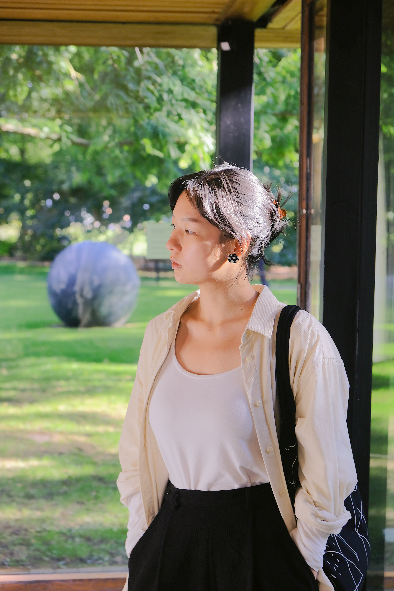

What Shapes Me


Curiosity
Curiosity knows no bounds—it led me to move to new countries to see the world.
This same drive fuels my exploration of real needs of products, industry trends, and technical feasibility, ensuring my designs are both innovative and feasible.
This same drive fuels my exploration of real needs of products, industry trends, and technical feasibility, ensuring my designs are both innovative and feasible.
Empathy
Empathy is woven into every aspect of my life, guiding how I design and interact with others.
It helps me create products that truly meet users' needs and fosters strong teamwork by valuing every voice.
It helps me create products that truly meet users' needs and fosters strong teamwork by valuing every voice.
Embracing Challenges
Challenges are more than obstacles. They’re opportunities that shape my growth. This mindset allows me to quickly adapt, whether learning new skills or tackling complex projects, always ready for the next step.